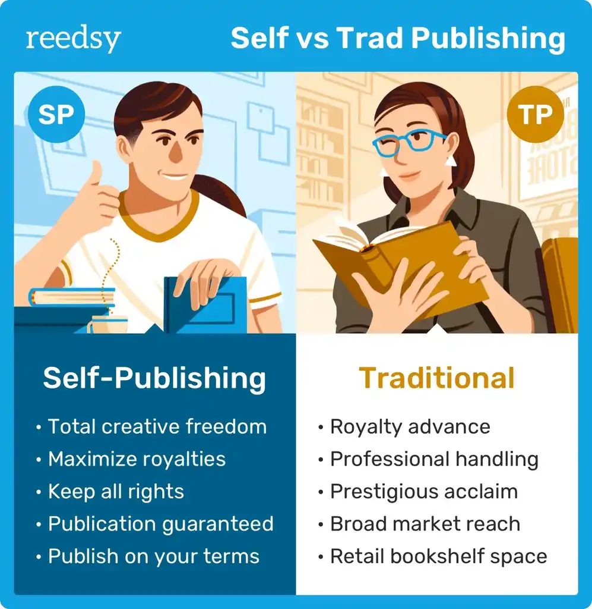
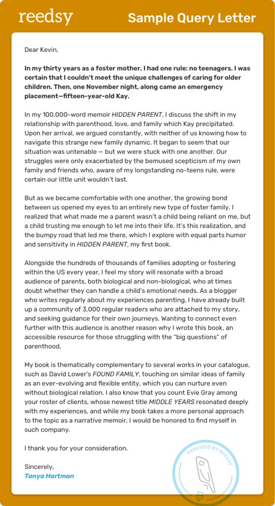

Learn how to take your story from your computer or notebook onto the shelves of bookstores! Writing a book is a major achievement, but getting it published traditionally requires patience, persistence, and a solid plan. The process can seem overwhelming, but breaking it down into four simple steps can make it more manageable. You can take it one step at a time. This article will take you through the traditional publishing process, but if you want self-publishing, there is more info on that here: Self-Publishing vs Traditional Publishing 
Before you even think about publishing, you need to have a completed book and it must be the best possible version you can make it. This means no major plot holes, grammatical errors, multiple rounds of self-editing or edited by others. You need a fully fleshed out book before moving onto other steps, because no agent or publisher will want a "mostly completed book" or a "well, I have a really good idea, but haven't actually written it yet." But if you do not have that yet, don't stress because you can get there. Writing a novel takes time, commitment, and a routine. Actually writing the book is often the hardest part of the whole thing because of life and obstacles that get in the way.
If the reason you haven't written or finished your book yet is because you constantly feel like there isn't enough time in the day...stop making excuses for yourself. We all have the same amount of time in the day. All it takes is a routine and committment. Writing a small amount each day is better than not writing at all. If you can wake up an hour earlier, or use your lunch break, or the times when you reach for your phone to scroll for a half hour, pick up your laptop or notebook and get writing instead. It is possible to do it. You just have to commit. It is ideal though to dedicate at least an hour or two several times a week to writing to make a lot of progress in your story. So if you have a free hour, stop making excuses and start doing it.
Once you have a manuscript that is ready, the next step is to find a literary agent. Agents act as a bridge between authors and publishers. They represent their writers and essentially have to sell their writer's work to publishing houses to help them secure book deals. To query an agent for your book, start by researching agents who represent the genre that you're writing in. Most agents now have websites where you can see their credentials, which books they had a hand in publishing, and their guidelines to submitting a manuscript for them to read. When reaching out to agents, a strong query letter is key to standing out among the hundreds of queries they get each week. A query letter, most times, consists of a short summary of what the book is about and briefly who you are. If you'd like more advice on how to write a really strong query letter, I'd suggest reading through this article, The Complete Guide to Query Letters, by Jane Friedman. Friedman has spent 25 years working in the publishing industry, has her own book, and a newsletter. In a query letter, you are essentially "pitching" your book idea to get them to want to read it. Most agents will also request that you submit the first 10 or so pages of your book, so you need to make sure those pages are going to be enticing. Being patient during this step is important, as this process can take time. If you are currently looking for agents, here are some links you could start with:
Here is an agent-approved query sample letter, and you can click
the photo to take you to a website with more examples.

If an agent takes you on, they will work on your behalf to pitch your book to publishing houses. Agents have extensive knowledge on the publishing industry, so they know which companies are more likely to be interested in a particular manuscript. They will negotiate deals for you and advocate for the best possible contract. This part of the process can also take time, as editors take their time reviewing manuscripts very carefully before making an offer. Landing a publishing deal is competitive, but with a strong book and the right agent, you increase your chances significantly.
Once a publisher expresses interest in your book, your agent will negotiate a book deal. This includes the advance--or the payment you recieve before publication,--the royalty rates, rights, and deadlines for revisions. If multiple publishers are interested, you may even enter an auction, which can lead you to better offers. Once you sign the contract, the final steps begin! And you're almost done! Editing rounds with your publisher, cover design, marketing plans, and preparing for your book's release. While publishing is a long process, signing a book deal is a huge milestone that brings you one step closer to seeing your book in the hands of readers.